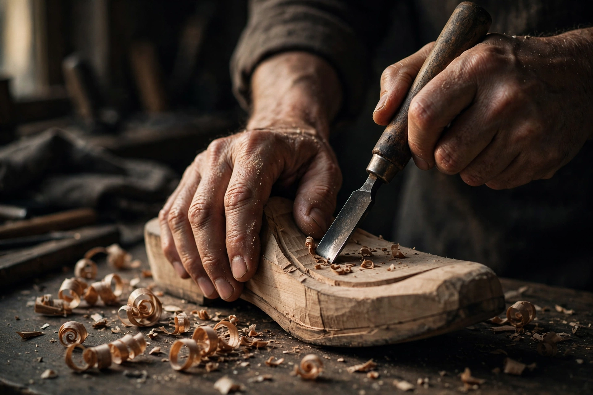

Perawatan
Lima langkah · 10 menitKulit tan nabati dan kayu justru makin bagus kalau dirawat — bukan karena dilapisi, tapi karena diberi jeda dan kelembapan yang cukup.
Beri jeda setelah pakai
Keluar dari kaki, tali dilepas, jangan langsung disimpan dalam keadaan lembap. Angin-anginkan semalam di tempat teduh — pori-pori kulit perlu kembali bernapas sebelum dipakai lagi besok.
Bersihkan kering dulu
Debu dan pasir disikat lembut dengan sikat kuda atau kain kering, arah serat kulit. Noda membandel: kain sedikit lembap, tanpa sabun dan tanpa tisu basah — bahan kimia justru mengeringkan warna.
Lembapkan tiap 2–4 minggu
Oleskan krim pelembab kulit tanpa pewangi tipis-tipis, pijat melingkar, diamkan semalam lalu poles paginya. Kulit yang kelembapan cukup tidak mudah retak di lipatan dan patinanya jadi rata.
Simpan jangan dibungkus rapat
Masukkan shoe tree atau kertas koran supaya bentuk tetap, simpan di rak teduh. Hindari plastik (lembap), sinar matahari langsung, dan heater — panas membuat kayu retak dan kulit kaku.
Sol kayu: lap kering, jangan direndam
Sol sonokeling dan jati dibersihkan dengan lap kering saja. Kalau basah karena hujan, keringkan di angin suhu ruang — jangan dijemur panas. Minyak kayu cukup dua kali setahun untuk menjaga kilap.
Sepatu yang dipakai hujan-hujanan bukan masalah: keringkan benar di langkah pertama, dan lembapkan satu langkah lebih awal. Kalau sol sudah tipis atau jahitan mulai lepas, kirim ke atelier untuk perbaikan — bukan diganti.

Poles akhir — atelier Yogyakarta